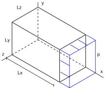

Uniaxial Compression example
In this tutorial example an hyperelastic solid is submitted to a uniaxial compression test. The geometry and tension applied are shown in the figure, where the $Lx$, $Ly$ and $Lz$ are the dimensions. A nominal compression tension $p$ is applied on the face $x=Lx$, as a nominal tension. Non-friction contact boundary conditions are considered on faces $x=0$, $y=0$ and $z=0$.
Analytic solution
Let us consider that a uniform deformation is produced, with a nonzero axial stretch $\alpha$ and nonzero transversal stretch $\beta$. The corresponding deformation gradient and Green-Lagrange strain tensors are given by:
\[\textbf{F} = \left[ \begin{matrix} \alpha & 0 & 0 \\ 0 & \beta & 0 \\ 0 & 0 & \beta \end{matrix} \right] \qquad \textbf{E} = \frac{1}{2}(\textbf{C} - \textbf{I}) = \left[ \begin{matrix} \frac{1}{2} \left(\alpha^2 -1\right) & 0 & 0 \\ 0 & \frac{1}{2} \left(\beta^2 -1\right) & 0 \\ 0 & 0 & \frac{1}{2} \left(\beta^2 -1\right) \end{matrix} \right]\]
where $\alpha = (1+u_x/L_x)$ and $\beta = (1+u_y/L_y)$, with $u_x$ and $u_y$ the linear displacements at $X=(L_x,L_y,L_z=L_y)$.
The neo-Hookean elastic strain energy potential $\Psi$ is given by:
\[\Psi(\mathbf{C=\textbf{F}^T\textbf{F}}) = \frac{\mu}{2}(I_1 -2ln(J)) + \frac{K}{2} ( J -1 )^2\]
where $I_1 = \mathrm{tr}(\mathbf{C})$ is the first invariant, $J = \sqrt{\det(\mathbf{C})}$ and $K$ and $\mu$ are the bulk and shear material parameters, respectively.
The second Piola-Kirchhoff tensor is given by:
\[\textbf{S}( \mathbf{C} ) = \mu (\textbf{I} - \mathbf{C}^{-1}) + K (J(J-1)\mathbf{C}^{-1}) \]
then, on the one hand, using the relation $\textbf{P}=\textbf{F}\textbf{S}$, the $P_{xx}$ nominal stress component is obtained and equaled to the applied compression:
\[P_{xx}( \mu,K ) = \alpha \left( \mu - \frac{\mu}{\alpha^2} + \frac{K\beta^2}{\alpha} (\beta^2 \alpha -1) \right) = - p\]
and on the other hand, the $P_{yy}$ and $P_{zz}$ components are obtained and equaled to zero:
\[P_{yy}( \mu,K ) = \beta \left( \mu - \frac{\mu}{\beta^2} + K (\alpha^2\beta^2 - \alpha) \right) = 0\]
Numerical solution
Before defining the structs, the workspace is cleaned, the ONSAS directory is added to the path and scalar geometry and material parameters are defined.
close all, if ~strcmp( getenv('TESTS_RUN'), 'yes'), clear all, end
% add path
addpath( genpath( [ pwd '/../../src'] ) ) ;
% scalar parameters
E = 1 ; nu = 0.3 ; p = -5 ; Lx = 2 ; Ly = 1 ; Lz = 1 ;MEB parameters
materials
The material of the solid considered is a neo-Hookean model with $\lambda$, $\mu$ and bulk($K$) parameters:
lambda = E*nu/((1+nu)*(1-2*nu)) ; mu = E/(2*(1+nu)) ; bulk = E / ( 3*(1-2*nu) ) ;since only one material is considered, a scalar struct is defined as follows
materials = struct() ;
materials.modelName = 'NHC' ;
materials.modelParams = [ mu bulk ] ;elements
In this model two kinds of elements are used: tetrahedron for the solid and triangle for introducing the external loads. Since two kinds of elements are used, the struct have length 2:
elements = struct() ;
elements(1).elemType = 'triangle' ;
elements(2).elemType = 'tetrahedron' ;
elements(2).elemTypeParams = [ 2 ] ;boundaryConds
in this case four BCs are considered, one corresponding to a load and three to displacements. the first BC introduced is a load, then the coordinate system, loadfactor time function and base load vector are defined
boundaryConds = struct() ;
boundaryConds(1).loadsCoordSys = 'global';
boundaryConds(1).loadsTimeFact = @(t) p*t ;
boundaryConds(1).loadsBaseVals = [ 1 0 0 0 0 0 ] ;the other BCs have imposed displacements
boundaryConds(2).imposDispDofs = [1] ;
boundaryConds(2).imposDispVals = 0 ;
%
boundaryConds(3).imposDispDofs = [3] ;
boundaryConds(3).imposDispVals = 0 ;
%
boundaryConds(4).imposDispDofs = [5] ;
boundaryConds(4).imposDispVals = 0 ;Mesh
A simple hand-made 8-node mesh, with 6 tetrahedrons is considered

The node coordinates matrix is given by
mesh = struct() ;
mesh.nodesCoords = [ 0 0 0 ; ...
0 0 Lz ; ...
0 Ly Lz ; ...
0 Ly 0 ; ...
Lx 0 0 ; ...
Lx 0 Lz ; ...
Lx Ly Lz ; ...
Lx Ly 0 ] ;and the connectivity cell is defined as follows with the four MEB parameters for each element followed by the indexes of the nodes of each element. All the eight triangle elements are considered with no material (since they are used only to include load) and the following six elements are solid neo-Hookean material tetrahedrons.
mesh.conecCell = {[ 0 1 1 5 8 6 ]; ... % loaded face
[ 0 1 1 6 8 7 ]; ... % loaded face
[ 0 1 2 4 1 2 ]; ... % x=0 supp face
[ 0 1 2 4 2 3 ]; ... % x=0 supp face
[ 0 1 3 6 2 1 ]; ... % y=0 supp face
[ 0 1 3 6 1 5 ]; ... % y=0 supp face
[ 0 1 4 1 4 5 ]; ... % z=0 supp face
[ 0 1 4 4 8 5 ]; ... % z=0 supp face
[ 1 2 0 1 4 2 6 ]; ... % tetrahedron
[ 1 2 0 6 2 3 4 ]; ... % tetrahedron
[ 1 2 0 4 3 6 7 ]; ... % tetrahedron
[ 1 2 0 4 1 5 6 ]; ... % tetrahedron
[ 1 2 0 4 6 5 8 ]; ... % tetrahedron
[ 1 2 0 4 7 6 8 ] ... % tetrahedron
} ;initialConds
since no initial non-homogeneous initial conditions are used, an empty struct is used .
initialConds = struct();Analysis parameters
analysisSettings = struct() ;
analysisSettings.methodName = 'newtonRaphson' ;
analysisSettings.stopTolIts = 30 ;
analysisSettings.stopTolDeltau = 1.0e-8 ;
analysisSettings.stopTolForces = 1.0e-8 ;
analysisSettings.finalTime = 1 ;
analysisSettings.deltaT = .1 ;Output parameters
otherParams = struct() ;
otherParams.problemName = 'uniaxialCompression_HandMadeMesh' ;
otherParams.plots_format = 'vtk' ;[ modelCurrSol, modelProperties, BCsData ] = ONSAS_init( materials, elements, boundaryConds, initialConds, mesh, analysisSettings, otherParams ) ;
%After that the structs are used to perform the numerical time analysis
[matUs, loadFactorsMat, modelSolutions ] = ONSAS_solve( modelCurrSol, modelProperties, BCsData ) ;
The displacement in $x$ of node 7 is computed:
controlDispsValsCase1 = matUs(6*6+1,:) ;
loadFactorsCase1 = loadFactorsMat ;Analytic solution computation
The numerical values of $\beta$ and $\alpha$ for each load step are:
alphas = (Lx + matUs(6*6+1,:)) / Lx ;
betas = (Ly + matUs(6*6+3,:)) / Ly ;and the corresponding analytic nominal tension is obtained
analyticFuncPxx = @(alphas,betas) mu * alphas - mu * 1./alphas + bulk * betas.^2 .* ( alphas .* betas.^2 -1) ;
analyticFuncPyy = @(alphas,betas) betas .* mu - mu * 1./betas + bulk * betas .* ( alphas.^2 .* betas.^2 - alphas) ;
analyticPxx = analyticFuncPxx( alphas, betas ) ;
analyticPyy = analyticFuncPyy( alphas, betas ) ;The error and the verif boolean are computed
aux1 = loadFactorsCase1' - analyticPxx ;
tolerance = 1e-6 ;
verifBoolean = ( norm( aux1 ) / norm( analyticPxx ) < 1e-6 ) && ( norm( analyticPyy ) < tolerance ) ;Plot
The numerical and analytic solutions are plotted.
lw = 2.0 ; ms = 11 ; plotfontsize = 18 ;
figure, hold on, grid on
plot( controlDispsValsCase1, loadFactorsCase1, 'r-x' , 'linewidth', lw,'markersize',ms )
plot( controlDispsValsCase1, analyticPxx, 'g-s' , 'linewidth', lw,'markersize',ms )
labx = xlabel('Displacement'); laby = ylabel('\lambda(t)') ;
legend( 'Numeric', 'Analytic' , 'location', 'SouthEast' )
set(gca, 'linewidth', 1.0, 'fontsize', plotfontsize )
set(labx, 'FontSize', plotfontsize); set(laby, 'FontSize', plotfontsize) ;
title('uniaxial compression test')
if length(getenv('TESTS_RUN')) > 0 && strcmp( getenv('TESTS_RUN'), 'yes')
fprintf('\ngenerating output png for docs.\n')
print( './output/verifCompression.png', '-dpng' )
else
fprintf('\n === NOT in docs workflow. ===\n')
end